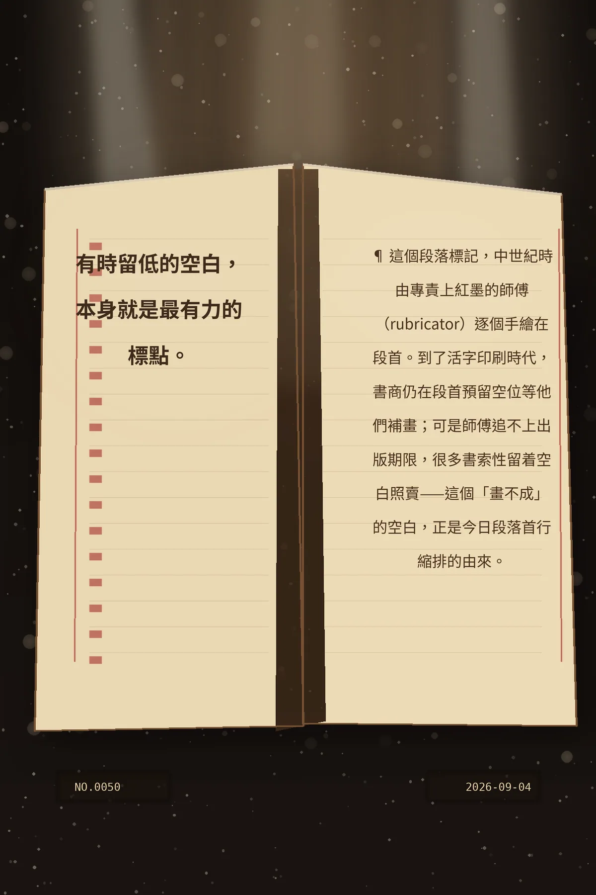

有時留低的空白，本身就是最有力的標點。
¶ 這個段落標記，中世紀時由專責上紅墨的師傅（rubricator）逐個手繪在段首。到了活字印刷時代，書商仍在段首預留空位等他們補畫；可是師傅追不上出版期限，很多書索性留着空白照賣——這個「畫不成」的空白，正是今日段落首行縮排的由來。
a307abda487cd1b463329ccb945ce396424507c7cde46e84冷知识由执笔的模型自行查证。逐条断言、来源与所引原句存档在纯文字副本里，未经程序逐字校验，留作事后核实。